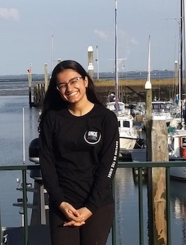

|  | Prasha MaithaniHonours Student
Email: prashamaithani(AT)u.nus.edu |
Background
I am a final-year Life Science major, specializing in Environmental Biology. Last year I completed a UROPS project that explored the relationship between rising sea levels and tidal flat ecology. My interests in marine biology are wide-ranging but understanding the impacts people have on aspects of the ocean, and science communication are themes particularly intriguing to me.
Honours Project
Reefs in Singapore are generally characterized by high turbidity and the presence of macroalgal communities - factors that directly affect the composition of the algal and bacterial symbionts found on corals. My project aims to understand how these symbiont communities can change when the host coral is exposed to different environmental conditions, and if these changes influence the overall health of the coral. Both algal and bacterial DNA will be sequenced and analysed, with the objective of characterizing the symbiont community composition of the corals found in differing conditions. It is hoped that these findings will provide further insight into the factors affecting the health of corals and will lead to the improved management of reefs in Singapore.